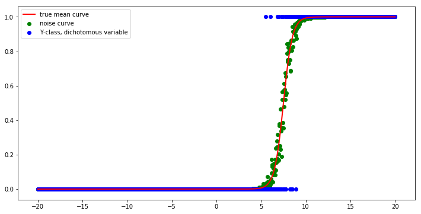
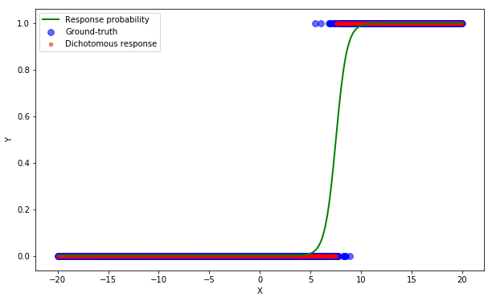

1. Introduction and assumptions
In this post-series, we are going to study the very basic modelling for classification problems, the logistic regression. Classification entails that the output is a discrete variable taking values on a pre-defined limited set, where the set dimension is the number of classes. Some examples are spam detection, object recognition and topic identification.
In this post, we implement the simple logistic regression case that we have analyzed in the first two posts (Part 1 and Part 2) using Sklearn first and Tensorflow then.
In this series, we do not split the dataset into training and testing sets, but we assess every model on the training set only. A dedicated post on model selection, overfitting/underfitting problem and regularization will be published soon.
2. Data generation
We create an equispaced x grid with 1000 points ranging from -20 to 20.
Then true y outcome, which represents the class to assign to the input, is defined via the logistic function of the linear transformation of input x with parameters Wgt.
The actual class is assigned by drawing samples from a binomial distribution.
A binomial distribution becomes a Bernoulli distribution when the number of trials is 1.
In other words, we generate data by sampling the y class for each input x, where the probability of success (i.e., of belonging to class 1) is given by:
$$ p = \sigma(\lbrack x, 1\rbrack\cdot \omega) $$
The logistic function is the $\sigma$ operator in the equation.
import numpy as np
import matplotlib.pyplot as plt
%matplotlib inline
from mpl_toolkits import mplot3d
def logistic(XX, ww, noise=0):
tt = np.dot(XX, ww) + noise
return 1/(1 + np.exp(-tt))
xx = np.linspace(-20., 20, 1000)
bb = np.ones_like(xx)
XX = np.vstack([xx, bb]).T # Add intercept
Wgt = np.array([2, -15]).reshape(-1, 1) # ground-truth parameters
Ymean = logistic(XX, Wgt) # True mean
Ynoise = logistic(XX, Wgt, noise=np.random.normal(scale=0.5, size=(len(xx), 1))) # noise
Yclass = np.random.binomial(1., Ynoise) # dichotomous variable, n_trial=1 => Bernoulli distribution
The figure shows the y class of each input in blue, the noise probability of success in green and the true mean with solid red line.
plt.figure(figsize=(12,6))
plt.plot(xx, Ymean, 'r-', lw=2, label='true mean curve')
plt.scatter(xx, Ynoise, c='g', label='noise curve')
plt.scatter(xx, Yclass, c='b', label='Y-class, dichotomous variable')
plt.legend();

3. Scikit-learn implementation
We implement the logistic regression class and the metric module directly from Scikit-learn.

Since we ignore regularization at this point, we set the C parameter to a very high value to reduce the regularization strength down to 0. It is in fact the inverse of regularization strength, as it is the case for Support Vector Machine applications.
After creating an instance of the model, we train it on the data with the fit method.
The information learned from the data is automatically stored into the model instance, which is in this case lgr.
Sklearn returns the parameter configuration of the model instance.
from sklearn.linear_model import LogisticRegression
from sklearn import metrics
lgr = LogisticRegression(C=1e5) # we want to ignore regularization
YY = Yclass[:, 0]
lgr.fit(XX, YY)
LogisticRegression(C=100000.0, class_weight=None, dual=False,
fit_intercept=True, intercept_scaling=1, max_iter=100,
multi_class='ovr', n_jobs=1, penalty='l2', random_state=None,
solver='liblinear', tol=0.0001, verbose=0, warm_start=False)
We then predict the labels of the same data input to assess the model performance at reproducing the training dataset.
It uses the information learned during the training process (fit step).
The predict method returns the class each input belongs according to the model, while predict_proba returns the probability to belong to any of the classes.
That’s why you get always 1 if you sum that 2D array along the horizontal axis.
Ypred = lgr.predict(XX)
Ypred_prob = lgr.predict_proba(XX)
Ypred.shape, Ypred_prob.shape
((1000,), (1000, 2))
np.all(np.sum(Ypred_prob, axis=1)==1)
True
We retrieve the model parameters and assess the model in terms of accuracy, precision and recall.
print("Parameters of single predictor: {:.3f}, intercept of decision boundary: {:.3f}".format(lgr.coef_[0,0], lgr.intercept_[0]))
Parameters of single predictor: 1.837, intercept of decision boundary: -6.915
We define here the metrics to assess the model performance:
- accuracy, which is the fraction of correct predictions to the total number of data points,
- precision, which is the fraction of correct predictions to the total number of positively predicted points,
- recall, which is the fraction of correct predictions to the total number of positive points.
For binary classification, four outcomes only are possible, where the positive/negative class refers to 1/0 value:
- True positive (TP): the model correctly predicts class 1
- False positive (FP): the model incorrectly predicts class 1
- True negative (TN): the model correctly predicts class 0
- False negative (FN): the model incorrectly predicts class 0
Positive/negative refers to the model outcome, True/False to the correctness of the model prediction.
The definition of precision $P$, recall $R$ and accuracy $A$ are:
$$ P = TP/(TP+FP) $$
$$ R = TP/(TP+FN) $$
$$ A = (TP+TN)/(TP+TN+FP+FN) $$
See more details here.
print("Accuracy: {}".format(metrics.accuracy_score(YY, Ypred)))
print("Precision: {}".format(metrics.precision_score(YY, Ypred)))
print("Recall: {}".format(metrics.recall_score(YY, Ypred)))
Accuracy: 0.978
Precision: 0.9647435897435898
Recall: 0.9647435897435898
The figure shows the ground-truth class of each input in blue, the model predicted class in red and the beneath probability of success with a solid green line.
plt.figure(figsize=(10, 6))
plt.scatter(xx, Yclass, c='b', s=60, alpha=0.6, label='Ground-truth')
plt.scatter(xx, Ypred, c='r', s=20, alpha=0.5, label='Dichotomous response')
plt.plot(xx, Ypred_prob[:,1], 'g', lw=2, label='Response probability')
plt.xlabel("X")
plt.ylabel("Y")
plt.legend()
plt.show()
4. TensorFlow implementation
We implement the same algorithm using the deep-learning library from Google, TensorFlow.

We import the entire library, from which we access to the various methods required to describe the model, to train it to the dataset and to estimate the outputs that are compared to the dataset ground-truth values.
The very first step is to reset the TF to the default graph, which means TF clears the default graph stack and resets the global default graph.
We then define the x and y variables as placeholder, while the ww parameters as variable.
In short, tf.Variable is used for trainable parameters of the model, while tf.placeholder is used to feed actual training examples.
That’s why we need to assign initial values, often random-generated, to the TF variables only.
The variable values can therefore be updated during optimization, can be shared and be stored after training.
We assign the placeholder type as float32 to both input and output.
The size of the input placeholder, xp, is set to (None, 2), since the number of rows is automatically determined from the batch size we feed to the optimizer object in the training step, while the column size is equal to the number of features (2 for the first case).
The size of the output placeholder is instead set to (None, 1), since only one value is required for each sample.
The feature weights ww and bias bb, which is equivalent to the Scikit-Learn intercept, are defined with the Variable method and initialized as a (2,1) and a (1,1) zero-arrays, respectively.
The final step is to combine TF variables and placeholders to translate the mathematical model into code.
The matrix multiplication between the input matrix and the weight array is performed with matmul.
The probability of belonging to class 1 is given by the sigmoid function implemented in TF.
The class is obtained with the round operator, as:
$$ Y_{class} = 1_{{p>0.5}} $$
where the $ 1_x $ operator returns 1 when x is True and 0 otherwise.
Accuracy is then defined by checking how frequently the model outcome and the ground-truth classes match each other.
At the end of these steps, we inspect the shape of each tensor. The question-mark symbol says that TF needs some data to determine the actual row size.
import tensorflow as tf
tf.reset_default_graph()
xp = tf.placeholder(dtype=tf.float32, shape=(None, 2))
yp = tf.placeholder(dtype=tf.float32, shape=(None, 1))
ww = tf.Variable(np.zeros((2,1)), dtype=tf.float32)
ymdl = tf.matmul(xp, ww)
yprob = tf.sigmoid(ymdl)
ycls = tf.round(yprob)
accuracy = tf.reduce_mean(tf.cast(tf.equal(ycls, yp), dtype=tf.float32))
print('Input shape: {}'.format(xp.shape))
print('Ground-truth output shape: {}'.format(yp.shape))
print('Weight shape: {}'.format(ww.shape))
print('Model output shape: {}'.format(ymdl.shape))
Input shape: (?, 2)
Ground-truth output shape: (?, 1)
Weight shape: (2, 1)
Model output shape: (?, 1)
The loss function is easily implemented using the method sigmoid_cross_entropy_with_logits from losses package.
The optimizer object that actually adjusts the model parameters (TF variables) with the gradient descent algorithm.
mdlLoss = tf.reduce_mean(tf.nn.sigmoid_cross_entropy_with_logits(logits=ymdl, labels=yp))
optimizer = tf.train.AdamOptimizer(learning_rate=0.01).minimize(loss=mdlLoss)
The next steps to train the model are to:
- initialize the variables.
- run a new session, which let us perform the actual computation by exploiting the graph structure previously defined.
- run the optimizer as many steps as the number of epochs
Nepoch. - run the model with the final parameter set and store the model output
yclsinto the prediction array. - retrieve the final parameter values by running a dedicated session. A different way would be to call the global_variables() method and get the variable values by key name.
Here the code.
Nepoch = 10000
init = tf.global_variables_initializer()
with tf.Session() as sess:
sess.run(init)
Jevol = []
for kk in range(Nepoch):
mdl_loss, _ = sess.run([mdlLoss, optimizer], feed_dict={xp: XX, yp: Yclass})
if kk%100 == 0:
Jevol.append((kk, mdl_loss))
if kk==Nepoch-1:
print('The final model loss is {}'.format(mdl_loss))
Ypred_tf = sess.run(ycls, feed_dict={xp: XX})
Yprob_tf = sess.run(yprob, feed_dict={xp: XX})
wOpt = sess.run([ww])[0]
mdlAcc = sess.run([accuracy], feed_dict={xp: XX, yp: Yclass})[0]
The final model loss is 0.04472097009420395
We retrieve the model parameters and assess the model in terms of accuracy, precision and recall.
print("Parameter of single predictor: {:.3f}, intercept of decision boundary: {:.3f}".format(wOpt[0,0], wOpt[1,0]))
Parameter of single predictor: 1.837, intercept of decision boundary: -13.830
print("Accuracy: {}".format(metrics.accuracy_score(YY, Ypred_tf)))
print("Precision: {}".format(metrics.precision_score(YY, Ypred_tf)))
print("Recall: {}".format(metrics.recall_score(YY, Ypred_tf)))
Accuracy: 0.978
Precision: 0.9647435897435898
Recall: 0.9647435897435898
The figure shows the ground-truth class of each input in blue, the model predicted class in red and the beneath probability of success with a solid green line.
plt.figure(figsize=(10, 6))
plt.scatter(xx, Yclass, c='b', s=60, alpha=0.6, label='Ground-truth')
plt.scatter(xx, Ypred_tf, c='r', s=20, alpha=0.5, label='Dichotomous response')
plt.plot(xx, Yprob_tf, 'g', lw=2, label='Response probability')
plt.xlabel("X")
plt.ylabel("Y")
plt.legend()
plt.show()
